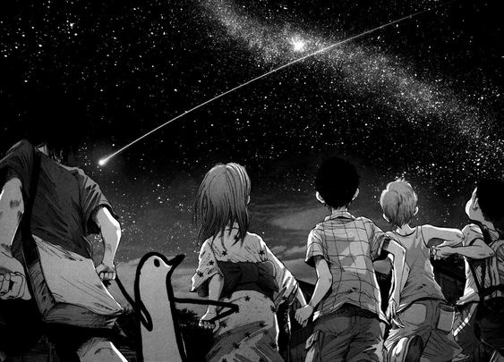
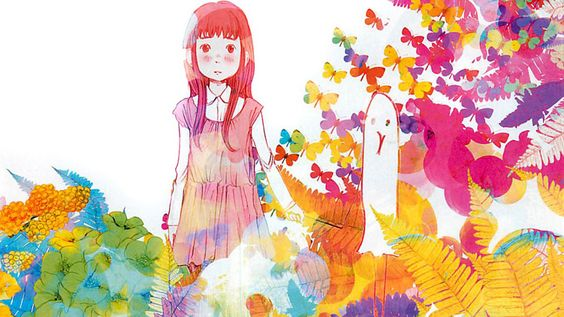
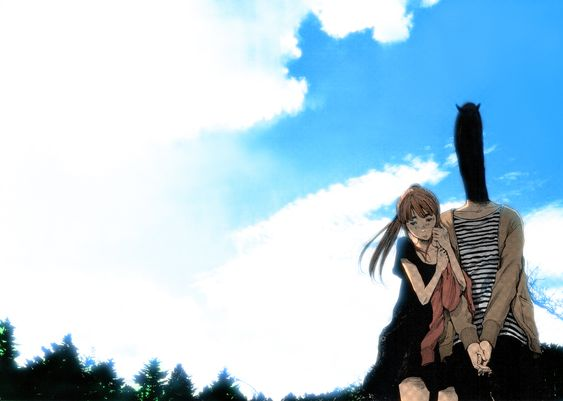

PunPun é mais um menino comum
que está no fundamental e sofre dos mesmos problemas
enfrentados pelos garotos de sua idade: amores,
frustrações, puberdade. O real problema acontece
quando em um determinado dia, seus pais acabam brigando
e o pai de PunPun agride sua mãe. Ela acaba tendo que ser
levada para o hospital e seu pai é sentenciado à prisão,
deixando Punpun na guarda de seu tio.
Ler mais

O primeiro amor de PunPun foi
Aiko Tanaka, uma garota bonita que havia acabado de
ser transferida para a escola. De alguma forma, esse
sentimento também foi despertado em Aiko, que acabou
também gostando de PunPun. O que teríamos, vários volumes
à frente, uma incrível e estranha relação amorosa.
Devo dizer que, aparentemente, a história desses
dois personagens tinha tudo e, ao mesmo tempo, nada
para dar certo. O objetivo aqui não é propagar spoiler,
mas o que posso adiantar é que essa relação é uma das
mais bizarras e amorosas que eu já presenciei em histórias
de mangás. Quando se leva em consideração o autor, logo
já dá para tirar uma pressuposta conclusão de que realmente
“aquilo” poderia acontecer. Embora Punpun ame muito Aiko e vice-versa,
esse amor torna-se extremamente doentio e obsessivo.
Ler mais

O fato é que discorrer sobre a história
dessa obra, em palavras, chega a ser um insulto. A complexidade
de Boa Noite Punpun é tamanha, que não há como expressar
todos os sentimentos despertados no leitor enquanto se
debruça em cada capítulo do mangá. O envolvimento com questões
familiares, amorosas, sobre complexos e também sobre existencialidade,
tornam a trama mais detalhista e com um teor mais importante, requisitando
uma análise mais profunda sobre tudo que é abordado. Acredito que o
ponto principal está focado no crescimento de Punpun, afinal, essa é
uma das categorias do mangá. Acompanhar a trajetória de vida do personagem
e de todas ao seu redor é o que torna a história interessante. Saber o que
cada um desejou e o que acabaram se tornando na realidade. Quais os efeitos
que surtiram no futuro com as opiniões que tomaram no passado. Todas essas
coisas devem ser levadas em consideração.
Ler mais